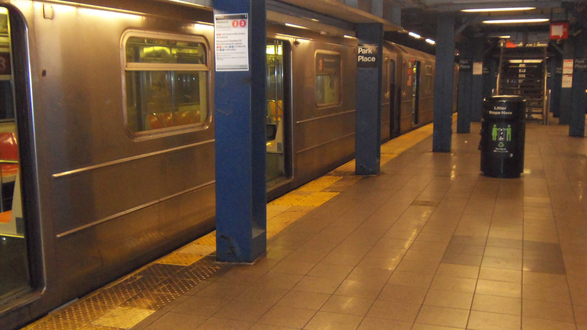

You continue waiting, and a empty train appears. It looks nothing like your normal train, but is going in the same direction.

This image was taken by Hiyoriiko (2022).
Board the train.
Leave, and risk being late.